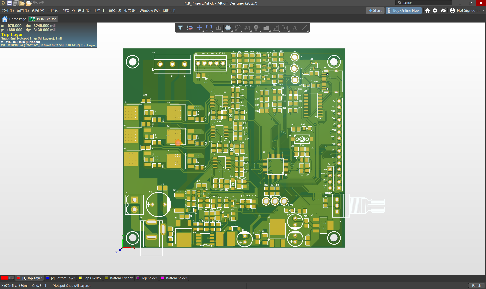

电路原理图
STM32G030 主控 + 多级降压电源树 + 三相逆变全桥

STM32G030 主控 + 多级降压电源树 + 三相逆变全桥
电机运转演示与调速效果
电源树验证、MOS 管测试、Hall 信号调试数据
PWM 斩波、反电动势、换相沿示波器实测
基于行业经典参考设计，独立承担从双层 PCB Layout、打样、SMT 贴片到完整硬件验证的全流程，目标实现 24V 供电的 BLDC 有感/无感方波控制。
· STM32G030C8T6 主控，XL1509 + 线性稳压多级降压电源树
· EG2132 栅极驱动 + 自举电路，JMTK3005A 三相逆变全桥
· GS321A 单电阻电流采样及 Hall 接口
· 空载电流 30mA，12V/5V/3.3V 输出精确
· 电源树完整性验证通过，MOS 管体二极管压降正常（正向 700-800mV）
· Hall 信号异常排查：确认电机线序为 CAB 而非 ABC，调整后电机平稳运转
· 运行电流 0.12-0.18A，最大转速电流约 0.67A，可通过电位器调速
· 发现 24V 转 12V 芯片温度偏高，定位为铺铜不足，已记录优化方案